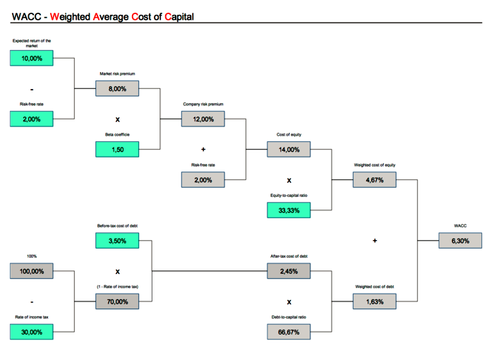
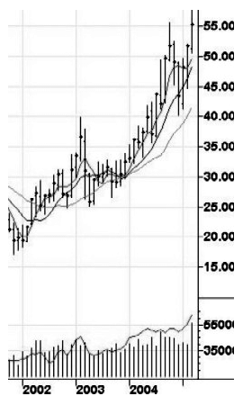
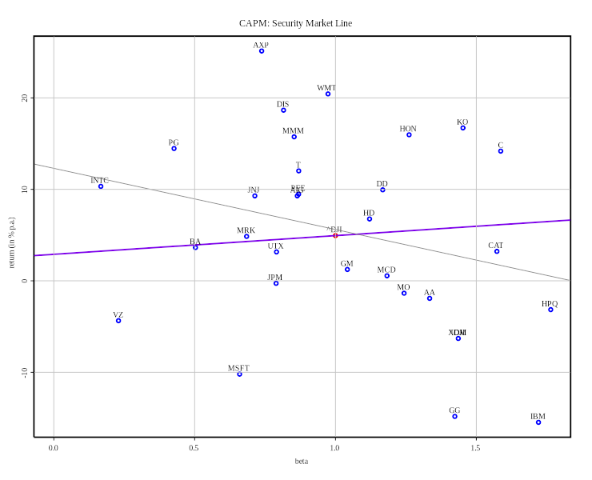
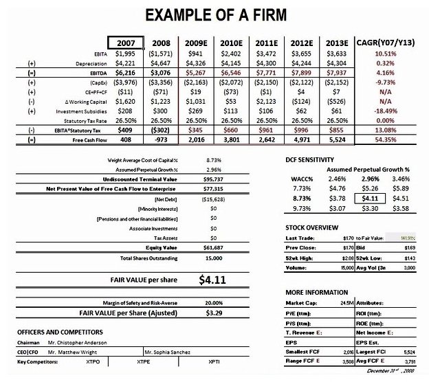
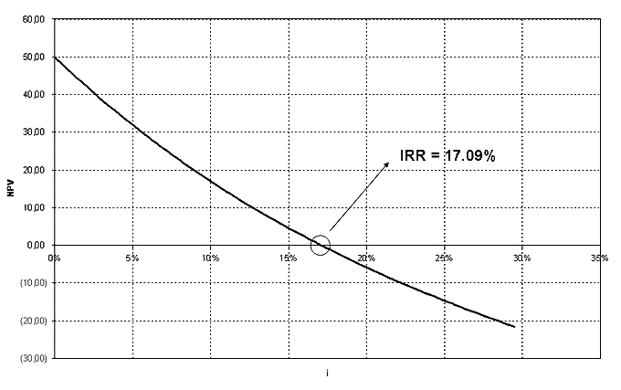
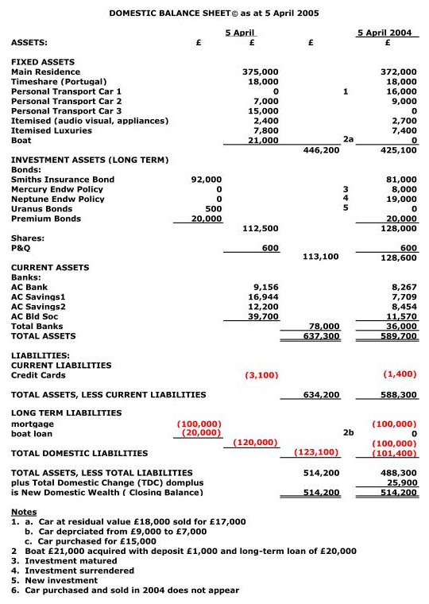
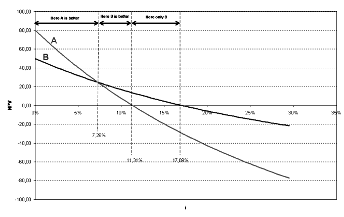
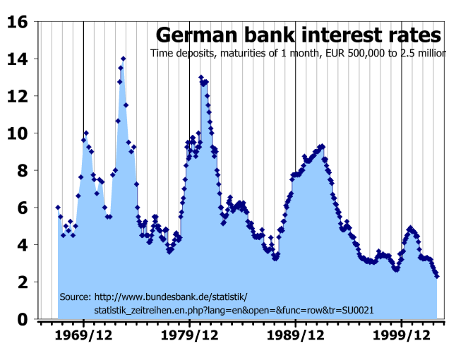

Table of Contents
10. Introduction to the Cost of Capital
10.1. The Basics of the Cost of Capital
10.1.1. Defining the Cost of Capital
10.1.2. Differences Between Required Return and the Cost of Capital
10.1.3. Relationship Between Financial Policy and the Cost of Capital
10.2. Valuing Different Costs
10.2.1. The Cost of Debt
10.2.2. The Cost of Preferred Stock
10.2.3. The Cost of Common Equity
10.2.4. The Cost of Retained Earnings
10.2.5. The Cost of New Common Stock
10.3. Approaches to Calculating the Cost of Capital
10.3.1. The Capital Asset Pricing Model
10.3.2. The SML Approach
10.3.3. Discounted Cash Flow Approach
10.3.4. The 'Bond Yield Plus Risk Premium' Approach
10.4. The WACC
10.4.1. Weighted Average Cost of Capital
10.4.2. The Weightings
10.4.3. Factors Controlled by the Firm
10.4.4. Factors External to the Firm
10.4.5. Making Risk Adjustments
10.4.6. Problems with WACC
10. Introduction to the Cost of Capital
10.1. The Basics of the Cost of Capital
10.1.1. Defining the Cost of Capital
Risk, return, and the time value of money are central inputs in distilling the cost of capital as an investor or borrower.
Learning Objective
Understand the broader concepts in the cost of capital
Key Points
- Defining the cost of capital takes into account two general perspectives: the required rate of return of the lender and the weighted average cost of capital for the borrower.
- Understanding the time value of money and understanding how to discount cash flows and returns into present value are important in assessing the cost of capital.
- As an investor, understanding the opportunity cost of foregone investments as a result of risk and expected return is critical to intelligent investing.
- By calculating and understanding the cost of debt and the cost of equity, organizations can calculate a weighted average cost of capital (WACC) consolidating all funding sources.
- Ultimately the cost of capital accounts for opportunity cost, risk, return, and the time value of money.
Key Term
- risk-free rate
- The default rate of return attached to a 'risk free' asset, such as a treasury bond. While nothing is completely risk free, these assets are as close to minimal risk as possible and represent the lowest practical rate of return.
When defining the cost of capital, it's useful to frame it from either the borrower's point of view (i.e. the organization) or the lender's point of view (the investor). For the organization borrowing the capital, the cost of capital is the cumulative rate of interest (usually derived as an average rate, combining all capital inputs) applied to the borrowed capital to fund a project. From the investor's point of view, the cost of capital is the relative required return rate considering the risk of the investment being made.
If this all sounds a bit confusing, don't worry. Here's an overview of the most important concepts:
Net Present Value (NPV)
The reason that capital incurs interest revolves around the simple fact that time has an impact on the valuation of capital, presenting opportunity costs and risk. To take into account the present value of future cash flows is therefore an important aspect of anticipating the rate of return on an investment. An NPV calculation will look at the forecasts for future cash flows, and discount those into present day dollars based on a given interest rate. This allows investors and organizations to determine if the cost of capital will be offset by the profits of a given investment.
Required Rate of Return
From the investor's point of view, every investment has a required rate of return for (generally) two reasons: the opportunity cost of foregone investments and the risk of the borrower defaulting on payments. For example, if an investor can get 10% return on an investment with exactly the same risk as an option with 12% return, the investor would incur an opportunity cost of 2% by investing in the 10% return option. Similarly, if two investments both yield a 10% return but present different levels of risk, an investor would make the decision based on the lowest risk option.
Cost of Debt
As an organization, one of the options for sourcing capital is to pursue debt. This can either be through taking out a loan or putting selling corporate bonds. These options tend to have lower interest rates, and long payback periods. Debt is paid back first in the case of bankruptcy, lowering it's risk as an investment (and subsequently, lowering it's return). The cost of this capital is calculated as:
Rf is the risk-free rate and T is the corporate rate. Tax is included in debt as debt is discounted as a deductible expense.
Cost of Equity
Equity, usually represented as shares of stock, is another option for borrowing (and investing) at the organizational level. Equity's cost is calculated via the capital asset pricing model (CAPM), as follows:
The variables above are:
- Es is the expected return for a security
- Rf is the expected risk-free rate
- βs is the sensitivity to market risk
- Rm is the historical return of the market
- (Rm – Rf) is the risk premium compared to the risk-free rate
Weighted Average Cost of Capital
With the above options in mind, the weighted average cost of capital (WACC) normalizes the cost of capital by combining the interest rates being incurred from both debt and equity. It can be written as:
While each of these concepts is quite a bit more complex in implementation, this overview gives some scope as to the general definition and considerations involved in the cost of capital. Capital incurs costs due to risk, return, and the intrinsic time value of money.
10.1.2. Differences Between Required Return and the Cost of Capital
The average cost of capital is calculated via combining the overall average required rate on debt stakeholders and equity stakeholders
Learning Objective
Calculate the weighted average cost of capital by understanding the required rate of various investors
Key Points
- Investors need to know the overall required return based on the risk of the investment in order to compare this to other investment opportunities.
- The overall cost of capital will be the combination of various required rates of returns on behalf of investors, some of which will likely be debt while others will be equity.
- The cost of capital should be weighted in order for the overall weight average cost of capital (WACC) for a given project or venture to be calculated. This WACC determines the overall required return on the project to become profitable (or at least break even).
- As a result, the difference between required return and cost of capital is twofold: the perspective (i.e. the borrower or the lender) and the potential for averaging these costs of capital from the borrowers perspective (i.e. multiple required returns).
Key Term
- weighted average cost of capital
- Or WACC, this is a calculation of the various required returns on a project, which ultimately determines the profitability required to break even.
Why Require Return Rates
When making investments on the business level, it is critical to create a required amount of return on the project. A required return is exactly what it sounds like— the amount of profit as a percentage of the investment that will be created over a given time period.
As an investor, this required rate is a practical concept. Investors have options, and each of those options will offer a rate of return. The risk attached to those rates will fluctuate, as higher risk projects require a higher rate of return. Through establishing this required rate, the investor is stipulating their expectations on repayment of this invested capital, which the borrower will confirm and agree to repay over a set time period (usually via timed installments).
So What's Cost of Capital?
This required amount of return will ultimately equal the cost of capital, as the required rate from the investor is now a cost being put on the borrower. Now, cost of capital for a given investor will always equate to the required return. However, things get a bit more complicated when organizations fund new projects via a wide variety of stakeholders.
Weighted Average Cost of Capital (WACC)
This is where the concept of weighted average cost of capital (WACC) enters the equation, as there may be more than one investor with varying rates of return. Intuitively, the WACC will then be a calculation which takes into account the percentage of the overall borrowed capital that each form of investment contributed, and the respective required rates. To make this a bit clearer, let's look at the equation of WACC that takes into account one rate for equity and another rate for debt:
In the above equation, you have D as total debt, E as total equity, Kd as the required return on debt, and Ke as the required return on equity. If various investors require different rates of return, the equation can be altered accordingly (i.e. Kd and Ke will each be averaged based on their respective inputs). For the sake of simplicity, this WACC equation will suffice for the majority of calculations.
{kind=link}
While this image goes into a bit more detail on the derivation of the cost of equity and the cost of debt, the final three boxes on the right ultimately demonstrate the way in which required rates balance out into a WACC (one for debt, one for equity). Debt tends to be a lower rate because it is paid out first if a company goes bankrupt (i.e. lower risk). Equity is a bit higher risk (only paid out if there is capital remaining after debts are paid), and thus equity has a higher rate (and higher risk).
Ultimately, the difference between the cost of capital and the required return is both one of perspective (borrower looks at cost of capital for a project; investors look at required return) as well as the potential for a WACC, which integrates various required returns for a single investment project.
10.1.3. Relationship Between Financial Policy and the Cost of Capital
Financial policy, not cost of capital, must be utilized to determine which investments to pursue, given that resources are limited.
Learning Objective
Explain the relationship between a company's financial policy and its cost of capital
Key Points
- As opposed to strictly using cost of capital, decisions must be made using opportunity cost of capital.
- Opportunity cost of capital is the amount of money foregone by investing in one asset compared to another.
- Facets of financial policy include valuation, portfolio theory, hedging, and capital structure.
Key Term
- leverage
- The use of borrowed funds with a contractually determined return to increase the ability of a business to invest and earn an expected higher return (usually at high risk).
Financial Policy and the Cost of Capital
Financial policy is used by companies or investors in order to determine the best way to allocate their resources. In regard to cost of capital, financial policy must be utilized in order to decide which investments have the highest return, given that resources are limited. To analyze various options, managers use valuation techniques, such as the capital asset pricing model or discounted cash flow analysis. As opposed to strictly using cost of capital, decisions must be made using opportunity cost of capital.
Opportunity cost of capital is the amount of money foregone by investing in one asset compared to another. As an investor, this can simply be a choice of one asset over another. As a company, this choice can also involve the use of current assets in new investments. For example, an idle piece of land could be used for a new factory; however, the opportunity cost of what else it could have been used for must be taken into consideration during analysis.
Other Roles of Financial Policy
The use of financial policy in decision making does not only involve valuation. Other facets include portfolio theory, hedging, and capital structure.
Portfolio Theory
Portfolio theory is a mathematical formulation of the concept of diversification in investing. It attempts to maximize the expected return of a portfolio, or a collection of investments, for a given amount of risk by carefully choosing the proportions of various assets. In other terms, portfolio theory attempts to minimize risk for a given level of expected return. For example, to the extent prices in the stock market move differently from prices in the bond market, a collection of both types of assets can, in theory, face lower overall risk than either could individually.
Hedging
Along the same lines, companies use hedging techniques to offset potential gains and losses. Hedging is the practice of taking a position in one market to offset and balance against the risk adopted by assuming a position in a contrary or opposing market or investment. Simply put, a hedge is used to reduce any substantial gains or losses suffered by an individual or an organization. Companies often use hedging techniques to offset the risk of price fluctuation for commodities, such as oil or agricultural products.
{kind=link}
Companies often use hedging techniques to offset price fluctuations for commodities. The fluctuation of oil prices can be seen in the above graph.
Capital Structure
The capital structure of a company refers to the way it finances its assets through some combination of equity, debt, or hybrid securities. Capital structure may be highly complex and include dozens of sources. A simple example, though, would be a company that sold \$20 million in equity and \$80 million in debt. This company would be 20% equity financed and 80% debt financed. A company's ratio of debt to total financing is referred to as its leverage.
10.2. Valuing Different Costs
10.2.1. The Cost of Debt
The cost of debt is a calculation taking into account the risk premium, the risk-free rate, and taxes.
Learning Objective
Calculate the cost of debt and understand how debt differs from equity
Key Points
- The weighted average cost of capital takes into account the cost of debt and the cost of equity. Measuring the cost of each of these is therefore critical to effective capital structuring.
- The cost of debt tends to be lower than the cost of equity, as debts are paid before equity in a bankruptcy situation.
- The risk-free rate and the tax rate are both firmly set. The risk-free rate is determined as the rate of return on an idealized risk-free asset.
- The risk premium is negotiated between the lender and the borrower, mostly depending on collateral and scale of the loan.
When financing a new project, business, or operation, organizations can utilize both equity and debt to create a balanced weighted average cost of capital. One of the primary differences between equity and debt pertains to risk, and the impact that risk has on the cost of capital. To understand the role of debt, and how the cost of debt impacts overall cost of capital, the weighted average cost of capital equation is a useful data point:
Calculating the Cost of Debt (Rd)
When an organization borrows capital from outside lenders, the interest on these loans is called debt. The variables involved in a debt transaction are fairly simple:
- Kd - The cost of debt (referred to as Rd above)
- Rf - The risk free rate
- T - Tax
- Credit risk rate - Or the risk premium
When these variables are plugged into a formula, it looks like this:
The risk -free rate (or Rf) is externally determined from the general market, and is described as the overall cost incurred due to the time value of money with no risk whatsoever involved. This is usually derived from a government treasury bond, as it is the most the investment asset in most markets with the lowest possible rate of risk. Tax rates are set externally as well, and are concrete.
The credit risk rate is therefore the point of negotiation, and where a risk premium is attached to the debt instrument to compensate the investor in regards to a return (for the risk taken). As a general rule, the larger the debt is the higher the risk rate will be (as all other things being equal, a higher debt is harder to pay back). Debtors will also take into consideration the collateral available to the organization (i.e. a valuation of their assets).
Debt Compared to Equity
Determining the cost of debt is quite a bit easier than determining the cost of equity. The inputs to a debt assessment are tangibly determined, and consistent across the life of the agreement. It is worth noting that debt is generally less risky from the investor's point of view, as debt obligations are paid out before equity obligations if a business goes bankrupt.
10.2.2. The Cost of Preferred Stock
The cost of preferred stock is equal to the preferred dividend divided by the preferred stock price, plus the expected growth rate.
Learning Objective
Calculate the cost of a company preferred stock
Key Points
- Preferred stock is an equity security with properties of both an equity and a debt instrument.
- Because preferred stock carries a differing amount of risk than other types of securities, we must calculate its asset specific cost of capital to work into our overall weighted average cost of capital.
- The dividend is usually specified as a percentage of the par value or as a fixed amount.
Key Term
- hybrid instrument
- A broad group of securities that pay a predictable (fixed or floating) rate of return or dividend until a certain date, at which point the holder has a number of options including converting the securities into the underlying share.
Example
- The price of a preferred stock is \$100. It will pay a fixed dividend of \$10 each year. The growth rate is expected to be 3%.. The cost of preferred stock is 13%.
The Cost of Preferred Stock
Preferred stock is an equity security with properties of both an equity and a debt instrument. It is generally considered a hybrid instrument. Preferred stock represents some degree of ownership in a company, but usually doesn't come with the same voting rights. In the event of liquidation, preferred shareholders are paid off before the common shareholder, but after debt holders. Preferred stock may also be callable or convertible, meaning that the company has the option to purchase the shares from shareholders at anytime for any reason - usually for a premium - or convert the shares to common stock. Similar to bonds, preferred stocks are rated by the major credit rating companies. Some people consider preferred stock to be more like debt than equity.
Contribution To Cost of Capital
Because preferred stock carries a differing amount of risk than other types of securities, we must calculate its asset specific cost of capital to work into our overall weighted average cost of capital. Similar to debt, this can be a relatively simple process since we can observe values needed as inputs in the market. With preferred shares, investors are usually guaranteed a fixed dividend forever. This is different than common stock, which has variable dividends that are never guaranteed. If preferred dividend is known and fixed, we can use the following equation to calculate the cost of capital for preferred stock .
The cost of preferred stock is equal to the preferred dividend divided by the preferred stock price, plus the growth rate.
This tells us that the cost of preferred stock is equal to the preferred dividend divided by the preferred stock price, plus the expected growth rate. The dividend is usually specified as a percentage of the par value or as a fixed amount. Sometimes, dividends on preferred shares may be negotiated as floating - they may change according to a benchmark interest rate index.
\$10 divided by \$100, plus 3%.
10.2.3. The Cost of Common Equity
The cost of common equity is an imperfect calculation, an estimation based upon valuing the firms risk relative to the market.
Learning Objective
Utilize various formulas to calculate the cost of common equity from different perspectives
Key Points
- Debt is a firm calculation of the cost of capital, where the lender applies an premium (interest rate) to the risk-free rate based upon the organization's existing assets (collateral) and the size of the loan.
- The cost of common equity is quite a bit less clear, as it is an estimation of the organization's susceptibility to risk.
- The capital asset pricing model (CAPM) is the traditional way to approach estimating an organization's required return rate for an investor, requiring a risk estimation.
- An expansion on the CAPM approach is the Fama-French three-factor model, which adds company size and book-to-market ratio to this calculation.
- The dividend discount model is another method, where each expected future dividend payment is discounted to present day dollars to provide a valuation of the security.
Key Term
- price-to-book ratio
- Or market-to-book ratio, this ratio compares the market valuation of an organization to the book value of the organization.
As a funding source, debt and equity are priced quite differently. While debt relies heavily on default premiums being applied to a risk-free bond rate of interest (the premium usually dependent on the size of the debt compared to the size of the firm), equity isn't quite as well-defined. As a result, the cost of common equity is often inferred through assessing and comparing it to similar risk profiles, and trying to decipher the firm's relative sensitivity to systematic (market) risk.
The Capital Asset Pricing Model
One common tool used in assessing the cost of common equity is the capital asset pricing model (CAPM), which can be described via the following formula:
What this formula is saying is essentially that the cost of equity is equal to the risk free rate of return plus a premium for the expected risk of investing in the organization's equity. The variable are defined as follows:
- Es - expected return for a security
- Rf - expected risk-free return rate
- βs - sensitivity to market risk
- Rm - historical return of the stock market
- (Rm – Rf) - risk premium of market assets over risk free assets
Other Tools to Value Equity
The cost of common equity is essentially the same thing as estimating the expected (or required) return to investors in the stock market. The idea is simply that the higher risk an organization is, the higher the corresponding return should be. As a result, there are countless stock price evaluation strategies and tactics one could use to estimate the cost of common equity from various perspectives. Two of these include the dividend discount model and the Fama-French three-factor model.
Dividend Discount Model
In short, this theory states that a given stock is worth the sum of its future dividend payments, discounted to their present value. This is therefore a model of deriving the present value of future dividend payments, calculated as follows (assuming no end date):
In this calculation, P is the stock price while D is the dividend, g is the (constant) growth rate, and r is the constant cost of equity and t is time.
There are a few problems with this method, most notably that a steady and perpetual growth rate that is less than the cost of capital may not be reasonable. Similarly, this model is quite vulnerable to the growth rate. Also, not all stocks pay dividends.
Fama-French Three-Factor Model
Another valuation model was derived by Eugene Fama and Kenneth French with the intention to include company size and price-to-book ratio with overall market risk. You'll recognize the first half of this equation as the simple CAPM calculation, while the second half includes SMB (small minus big market capitalization) and HML (high minus low book-to-market ratio) multiplied by coefficients (from linear regression). While this all sounds a bit complicated, the basic premise is to offset the risk calculation with a stronger valuation for a firm's assets and scale:
Conclusion
All and all, the valuation of common equity is always an estimation. As understanding the risk of a given organization within the stock market is intrinsically speculative, equity tends to be quite a bit more costly than debt. After all, when an organization goes bankrupt it is the debtors who are reimbursed first, preferred stock next, and common stock last. This is the riskiest position of an investment.
10.2.4. The Cost of Retained Earnings
Due to the relationship between retained earnings and dividends, the cost of retained earnings as a source of capital is relative to the overall cost of equity.
Learning Objective
Recognize the relationship between dividends, net income, and retained earnings
Key Points
- Retained earnings represent the capital remaining after net income is paid out to investors and shareholders via dividends. Retained earnings are reinvested back into the organization.
- Reinvesting capital into the organization is therefore considered equity, and calculated relative to that equity within the weighted average cost of capital (WACC).
- Retained earnings represents the capital left after paying out dividends. The opportunity cost of retaining earnings is dividends, and is therefore equivalent in cost to the equity that expects those dividends.
- As a result, understanding the retention ratio is dependent on deriving the dividend payout ratio.
Key Term
- dividend payout ratio
- The fraction of net income an organization pays out to investors.
Retained Earnings Defined
Retained earnings indicate the amount of capital remaining after profits or losses from net income are paid out to investors and shareholders via dividends. Retained earnings are reinvested back into the organization. When organizations create profits, these profits are not always entirely distributed to investors at the end of a reporting period. As a result, these retained earnings can essentially be viewed as a potential funding source for the organization.
No capital comes without costs, however, and the cost of this capital must be taken into account when calculating the weighted average cost of capital (WACC). Retained earnings are included in the WACC equation as equity, as dividends are a component of the return on capital to equity stakeholders, and thus will have a correspondingly weighted influence on the cost of equity.
Understanding the equation to determine the retention ratio adds some clarification for this point:
The dividend payout ratio is a useful addition to the above equation, and is written as:
The relationship between dividends and retained earnings is quite clear when it comes to recognizing the opportunity cost and thus the overall cost of this capital source.

Retained earnings is listed under equity, and is thus relative to the cost of equity.
10.2.5. The Cost of New Common Stock
Issuing new common stock is a time intensive process that gives access to capital with various direct and indirect costs.
Learning Objective
Weigh the direct and indirect costs of issuing new common stock as a form of capital
Key Points
- One of the options for raising organizational capital is issuing new common stocks, which falls under new equity (as opposed to debt).
- Issuance of new common stock incurs a variety of direct costs, including those related to legal, accounting, marketing, management, and taxation.
- Issuing new common stock also incurs a variety of indirect costs revolving around loss of ownership, legal requirements of financial statement releases, and unreliability of demand for shares.
Key Term
- weighted average cost of capital
- Common stock is one of a variety of inputs in the weighted average cost of capital, which calculates the overall cost of borrowing.
Cost of Capital
When it comes to the cost of capital, common stock is one of a few options on the table for raising funding. From various debt instruments to preferred stock to common stock, larger organizations tend to diversify funding input to optimize their potential financial leverage. In order to understand the weighted average cost of capital (WACC) of all of these inputs, the cost of each source of debt and/or equity must be determined.
The Cost of Common Stock
When it comes to issuing common stock, there are both direct and indirect costs to consider.
Direct Costs
In terms of literal capital spent, the issuance of new common stock incurs a variety of capital costs both at the initial offering and throughout the process of managing this funding source over time:
- Legal fees for the distribution of business shares to the general public
- Increased accounting costs (if initial IPO) for management of a publicly traded firm
- Marketing costs for recruiting investors
- The time and effort of management
- Taxation (which differ region to region) pertaining the the distribution of equity
From a general perspective, the process of offering shares is skill intensive, from management to legal to accounting, firms must hire and maintain a wide pool of talent to maintain this form of equity.
Indirect Costs
In addition to the tangible capital costs involved, there are also a variety of indirect trade-offs that organizations must understand prior to pursuing this source of funding. Indirect costs include:
- Requirement to release financial information, including information that competitors may find valuable
- Compared to debt, it is less reliable as there may not be buyers interested at the desired price point
- Some loss of control, as the sale of shares is essentially the sale of organizational ownership
- Depending on the scale of shares available, the organization must consider takeover risks
As the issuance of publicly traded common stock is essentially the sale of the public auction of organizational equity, any and all considerations pertaining to control, ownership and legal implications should be considered as opportunity costs compared to other forms of funding.
10.3. Approaches to Calculating the Cost of Capital
10.3.1. The Capital Asset Pricing Model
The capital asset pricing model helps investors assess the required rate of return on a given asset by measuring sensitivity to risk.
Learning Objective
Calculate sensitivity to risk on a theoretical asset using the CAPM equation
Key Points
- Investors use various tools to determine the overall expected return and relative risk of a security in the broader financial markets.
- One such tool is the capital asset pricing model (CAPM), which essentially distills the required rate of return applied to the risks (both of which are relative to the risk-free rate).
- By utilizing the variables involved in a CAPM calculation, an investor can also determine the risk to return ratio alongside the security market line (a graphical representation of the asset's risk and return).
- By utilizing the CAPM equation, investors can determine when an asset is undervalued, and balance a portfolio for the best prospective return on the lowest possible risk.
Key Term
- capital asset pricing model
- An equation that assesses the required rate of return on a given investment based upon its risk relative to a theoretical risk-free asset.
When considering assets for the diversification of an investment portfolio, investors and financiers use a variety of tools to project the required rate of return and risk of a given investment. All this really means is that investors are on the look out for ways to minimize risk, maximize returns, and invest intelligently in assets that are well-priced. The key assumption here is that the market will self-correct to adjust each investment option's expected return to the relative risk of investing.
The Capital Asset Pricing Model
When measuring the ratio between risk and return on a given investment, the capital asset pricing model (CAPM) can be a useful tool. This model focuses on measuring a given asset's sensitivity to systematic risk (also referred to as market risk) in relation to the expected return compared to that of a theoretical risk-free asset.
How CAPM Works
This sounds complicated, but it's simpler than it seems. All this really means is that the CAPM tries to measure the risk the market will offer the asset compared to the risk-free rate, and make sure the expected return will offset that risk. To understand this concept, there are a few variables that are useful to identify up front:
- E(Ri) is an expected return on security
- E(RM) is an expected return on market portfolio M
- β is a non-diversifiable or systematic risk
- RM is a market rate of return
- Rf is a risk-free rate
There are quite a few ways to rearrange the relationship between these variables to derive meaningful information. Like all equations, depending on what you know you can solve for what you don't know as well. For a basic CAPM calculations, you would want to solve for the expected return on a security, which looks like this:
Security Market Line
Through rearranging these variables, you can also take a look at the concept of the security market line (SML), which underlines a security's relationship with systematic risk and respected return in a graphical format. This is written as:
{kind=link}
The security market line is illustrated in this graph, where an assets expected return can be visualized.
Risk and Return
A final application of the CAPM variables in relation to one another is in deriving a ratio that illustrates the relationship between risk and return. On the left side of the equation below, you have an assessment of the overall risk relative to a risk-free asset. On the right side, you have the overall return (similarly relative to a risk-free asset). This can be written as follows:
Investors can utilize the CAPM equation and its various implications to assess a variety of market investment opportunities to diversify a portfolio and identify undervalued assets.
10.3.2. The SML Approach
The SML is the graphical representation of CAPM used to determine if an asset is priced to offer a reasonable expected return for the risk.
Learning Objective
Analyze assets using the Security Market Line Approach
Key Points
- The SML graphs the relationship between risk β (beta) and expected return.
- All correctly priced assets lie on the SML.
- If a security is priced above the SML, it is undervalued. If it is priced below the SML, it is overvalued.
Key Term
- slope
- The ratio of the vertical and horizontal distances between two points on a line; zero if the line is horizontal, undefined if it is vertical.
Example
- The current risk-free rate is 5%. The market is expected to return 12% next year. The beta of the security is 1.9. Expected return = 5% + 1.9*(12% - 5%) Expected return = 18.3% We expect the asset to return 18.3% and be plotted on the SML. However, the current real rate of return for the asset is 19%. The asset would be plotted above the SML. Therefore, it is undervalued and should be bought.
The SML Approach
The Security Market Line (SML) is the graphical representation of the capital asset pricing model (CAPM), with the x-axis representing the risk (beta), and the y-axis representing the expected return. It graphs the relationship between beta (β) and expected return, i.e. it shows expected return as a function of β. The y-intercept of the SML is equal to the risk-free interest rate, while the slope is equal to the market risk premium (the market's rate of return minus the risk-free rate). The slope also represents the risk-return tradeoff at a given time. The SML is applicable to any asset.
The SML is the graphical representation of CAPM, and thus is found using the same equation.
Applications of the SML
Individual assets that are correctly priced are plotted on the SML. In the ideal world of CAPM, all assets are correctly priced and thus lie on the SML. In real market scenarios, we are able to use the SML graph to determine if an asset being considered for a portfolio offers a reasonable expected return for the risk. If an asset is priced at a point above the SML, it is undervalued, since for a given amount of risk, it yields a higher return. Conversely, an asset priced below the SML is overvalued, since for a given amount of risk, it yields a lower return.
{kind=link}
The Security Market Line for the Dow Jones Industrial Average over a 3 year period, with the x-axis representing beta and the y-axis representing expected return.
Another way to think about real market applications of the SML would be in terms of buying and selling securities. If an asset is priced above the SML, and thus undervalued, it should be bought. If an asset is priced below the SML, and thus overvalued, it should be sold.
10.3.3. Discounted Cash Flow Approach
A discounted cash flow analysis is a highly useful tool for calculating the net present value of a given product, process, asset, or organization.
Learning Objective
Translate future projected cash flows into present day dollars, incorporating risk and the time value of money
Key Points
- A discounted cash flow analysis is a highly useful tool for determining the net present value (NPV) of a given organization, process, product, or asset.
- An NPV takes into account risk, forecasts for cash flows, and the time value of money to determine what future capital returns are worth in present-day dollars.
- When calculating discounted cash flows over a given time period, investors and strategists must estimate the required rate of return based on assumed risk and the opportunity cost of risk-free investments (i.e. risk-free rate).
- The most important thing for strategists and investors to remember about a discounted cash flow analysis is uncertainty, as these are future cash flows that may (or may not) occur.
Key Terms
- discount rate
- The interest rate used to discount future cash flows into present values.
- nominal value
- Prior to adjustment (in this context, prior to time value of money adjustments).
The discounted cash flow approach is a valuation method investors and organizations can use to assess the net present value (NPV) of an asset, process, product, or the overall organization. NPV analyses using the discounted cash flow approach are widely used across various industries to decide which projects to invest in. They are also used as valuation devices for investors when looking at company performance, using past performance to project future performance.
The Discounted Cash Flow Formula
The discounted cash flow formula focuses on determining the relative time value of money of each projected cash flow (i.e. monthly, quarterly, annually, etc.), bringing each forecast of future value into present value terms. Just as in an NPV analysis, the ultimate end product will be the value of future profits (or losses) in today's terms. It's calculated as follows:
In situations of multiple cash flows over multiple periods of time, it is necessary to create a summation that can incorporate variance in both variables:
Sometimes cash flows are considered continuous. In such scenarios, the appropriate adjustment to the equation is:
Inputs
When considering these formulas, you'll need to understand your inputs. The inputs for a discounted cash flow analysis are:
- DPV - The discounted present value of the future cash flow (FV), or FV adjusted to compensate for the units of time in the future it will be received.
- FV - The nominal value of a cash flow amount in a future period (i.e. the amount of the cash flow prior to taking time value of money into account).
- r - The interest rate or discount rate, which reflects two important pieces of information: the opportunity cost of foregoing other investments as well as the intrinsic risk of not receiving the projected cash flow.
- n - The time (in a given unit of time) before the future cash flow occurs. This is usually done annually, but can be done monthly or quarterly. Keep in mind that r must be adjusted according to the time period!
Strategic Use
Like any projection, the most important thing to keep in mind as either investor or strategist is uncertainty. The primary purpose of a future cash flow analysis is to balance expectations to consider existing and future resources to make the optimal decision (from a profit perspective). As a result, determining 'r' (required rate of return due to opportunity cost and risk) is absolutely critical to the success of these calculations.
{kind=link}
This is a good example of a what a discounted cash flow analysis would look like on paper, particularly as a prospective investor. There's actually quite a bit more information here than you may strictly need to understand the calculation, but it's a great way to see how each piece of information fits together.
10.3.4. The "Bond Yield Plus Risk Premium" Approach
We can estimate the value of a company's equity by adding its risk premium to the yield to maturity on the company's long-term debt.
Learning Objective
Describe the process for the bond yield plus risk premium approach
Key Points
- The BYPRP approach applies to a company's publicly traded equity.
- The yield to maturity is the discount rate at which the sum of all future cash flows from a bond are equal to its price.
- The equity risk premium is the return that stocks are expected to receive in excess of the risk-free interest rate.
- The BYPRP approach does not produce as accurate an estimate as the capital asset pricing model or discounted cash flow analysis.
Key Terms
- dividend yield
- A company's total annual dividend payment per share, divided by its price per share.
- principal payment
- The payment made upon maturity of a bond
- coupon payment
- A periodic interest payment that the bondholder receives during the time between when the bond is issued and when it matures.
Example
- A company's long-term debt has a yield to maturity of 6%. The risk premium on its equity is 4%. Thus, the required return on the company's equity is 10%.
Bond Yield Plus Risk Premium Approach
The bond yield plus risk premium (BYPRP) approach is another method we can use to determine the value of an asset, specifically, a company's publicly traded equity. BYPRP allows us to estimate the required return on an equity by adding the equity's risk premium to the yield to maturity on company's long-term debt.
States that the required return on an equity equals the yield of the company's long-term debt plus the equity's risk premium.
Bond Yield vs. Risk Premium
Simply put, the yield on a bond is the rate of return received from the investment. In the BYPRP approach, we use a bond's yield to maturity, which is the discount rate at which the sum of all future cash flows from the bond (coupon payments and principal payments) are equal to the price of the bond. This is also referred to as the internal rate of return (IRR).
{kind=link}
A hypothetical graph showing yield to maturities (or internal rates of return) for corresponding present values.
The equity risk premium is essentially the return that stocks are expected to receive in excess of the risk-free interest rate. The normal historical equity risk premium for all equities has been just over 6%. In general, an equity's risk premium will be between 5% and 7%. Common methods for estimating the equity risk premium include:
- The Fed Model (forward operating earnings yield [earnings per share divided by share price] minus the 10-year U.S. Treasury Bond yield)
- The dividend yield plus projected earnings growth, minus the 10-year Treasury yield
- The historical stock returns minus the 10-year Treasury yield
Estimating the value of an equity using the bond yield plus risk premium approach has its drawbacks. We can only utilize the BYPRP approach if the entity has publicly traded debt, and it does not produce as accurate an estimate as the capital asset pricing model or discounted cash flow analysis.
Moreover, equity risk premium estimates can be highly inaccurate, while also varying wildly depending on which model is used. It can be very difficult to get an accurate estimate of the risk premium on an equity, having a duration of roughly 50 years, using a risk-free rate of such short duration as a 10-year Treasury bond.
Required return = 6% + 4%
10.4. The WACC
10.4.1. Weighted Average Cost of Capital
The weighted average cost of capital (WACC) is a calculation that reflects how much an organization pays in interest when acquiring financing options.
Learning Objective
Derive the weighted average cost of capital
Key Points
- The weighted average cost of capital (WACC) is a calculation that allows firms to understand the overall costs of acquiring financing.
- Capital inputs generally come in the form of debt and equity. Debt is usually quite simple to calculate as it is set in the terms of bonds and loans explicitly.
- Equity is a bit more complex, as it is subjected to market (systematic) risk. The capital asset pricing model is a useful tool in estimating the cost of equity.
- Applying the WACC to the estimated rate of return for new projects and ventures is a simple way to determine if a project is sufficiently profitable to offset the cost (risk) of financing.
Key Term
- weighted average cost of capital
- A calculation of the overall cost of capital used by an enterprise, made by totaling the cost of each source of capital used multiplied by its proportional share of the total capital used.
Weighted Average Cost of Capital Defined
Organizations have a few options available when it comes to finding funding for their operations. From debt options such as taking out loans or offering long-term corporate bonds to equity such as preferred and common stock, larger organizations tend to find a balance between these options that is optimized for the best possible weighted average cost of capital (WACC) to operate at the scale that creates the best revenue opportunity.
In short, the WACC is a measure of what all of these capital inputs will cost the organization in terms of an average interest rate.
Why Calculate WACC?
WACC is a useful calculation, as it shows management what the cost of borrowing capital is overall. This overall cost of capital can then be a minimum required return on any new operation. For example, if it will cost 8% in capital costs to fund a project that creates 10% in profit, the organization can confidently borrow capital to fund this project. If the project would only turn 8% profit, the firm would have a difficult decision. If the project would turn 6% profit, it is quite easy to strategically argue against the new project.
How to Calculate WACC
Calculating the cost of capital is actually quite a simple equation. Most firms are only receiving from either debt or equity (though there can be quite few inputs to each of these subheadings). What this means is that the overall percentage of the business that is funded by debt (MVd/MVd + MVe) must be multiplied by the cost of debt (Rd), while similarly the percent funding of equity (MVe/MVd + MVe) must be multiplied by the cost of equity (Re) and added together. This can also be applied to the corporate tax rate in a given country of operation. This is written out as follows:
The cost of debt is usually fixed, based on the terms of a given bond or loan contract. As a result, the cost of debt is usually both certain and predictable. The cost of equity is a little bit more complex, as it is speculative and often determined (to some degree) by investor behavior. The capital asset pricing model (CAPM) is a traditional approach to determining the cost of equity:
Each of the variables here are defined as:
- Es - expected return
- Rf - expected risk-free return
- βs - sensitivity to market risk
- Rm -historical return
- (Rm – Rf) - risk premium of market assets over risk free assets.
By calculating the estimated cost of equity, and applying that to the WACC equation with the cost of debt and capital structure, organizations can determine the cost of capital (and thus the required return on projects/assets).
{kind=link}
This diagram is an excellent illustration of how various forms of debt and equity consolidate into broader calculation of debt and equity overall, and how those can combine as a total weighted average cost of capital.
10.4.2. The Weightings
The weightings used in the WACC are ratios of the market values of various forms of debt and equity used in a company's financing.
Learning Objective
Define how a company's weighted average cost of capital is weighted
Key Points
- The WACC must take into account the weight of each component of a company's capital structure.
- The calculation of the WACC usually uses the market values of the various components rather than their book values.
- Market value is the price at which an asset would trade in a competitive auction setting.
- Book value refers to the value of an asset according to the account balance present on the balance sheet of a company.
- If the value of a company's debt exceeds the value of its equity, the cost of its debt will have more "weight" in calculating its total cost of capital than the cost of equity. If the value of the company's equity exceeds its debt, the cost of its equity will have more weight.
Key Term
- Synergy
- Benefits resulting from combining two different groups, people, objects, or processes.
The Weightings
To calculate the weighted average cost of capital (WACC) we must take into account the weight of each component of a company's capital structure. To review, the equation for WACC is:
MVe stands for the market value of equity; MVd stands for the Market Value of Debt; Re stands for cost of equity; Rd stands for cost of debt; and t is the company's tax rate. If the person analyzing a company chooses or if the market value of a company's debt and equity is not available, the book value can be used.
The "weighting" varies based on how the company finances its activities. If the value of a company's debt exceeds the value of its equity, the cost of its debt will have more "weight" in calculating its total cost of capital than the cost of equity. If the value of the company's equity exceeds its debt, the cost of its equity will have more weight.
Market Value vs. Book Value
Since we are measuring expected cost of new capital, the calculation of weighted average cost of capital usually uses the market values of the various components rather than their book values. These may differ significantly.
Market value is the price at which an asset would trade in a competitive auction setting. It is the true underlying value of an asset according to theoretical standards. It is a distinct concept from market price, which is the price at which one can transact. For market price to equal market value, the market must be efficient and rational. Market value also requires the element of "special value" to be disregarded. Special value refers to a synergy that may exist between two parties that makes the fair price of a transaction higher.
Book value refers to the value of an asset according to the account balance present on the balance sheet of a company. The balance sheet is a summary of the financial balances of a company and is often described as a "snapshot of a company's financial condition. "
An asset's initial book value is its actual cash value or its acquisition cost. Cash assets are recorded or "booked" at actual cash value. Assets such as buildings, land, and equipment are valued based on their acquisition cost, which includes the actual cash cost of the asset, plus certain costs tied to the purchase of the asset, such as broker fees.
{kind=link}
If the person analyzing a company chooses or if the market value of a company's debt and equity is not available, the book value can be used. The book value of debt and equity can be found on the company's balance sheet.
10.4.3. Factors Controlled by the Firm
Decisions about capital structure (ratio of debt and equity) alongside projecting rates of return can give firms some internal control over capital costs.
Learning Objective
Recognize the strategic considerations of capital structure by understanding weighted average cost of capital and the internal rate of return
Key Points
- By understanding the weighted average cost of capital (WACC) and potential internal rates of return (IRR) of various projects, firms can have some strategic control of capital costs and investment returns.
- Each funding source will come with a different cost of capital. Averaging these funding sources into the WACC is a central tool for financial management.
- Once the costs of capital are optimized, a business can apply this cost of capital to various asset and project assessments. The IRR must exceed the WACC.
Key Term
- capital structure
- The way that a corporation finances its assets through some combination of equity, debt, and hybrid securities.
When pursuing financing, organizations encounter a variety of factors that impact the weighted average cost of capital. Some of these factors are within the firm's strategic control, while others are external forces outside the firm's control. As a financial professional or upper level strategist, understanding what capital structure options are available to a firm plays a critical role in financial management.
Capital Structure
Capital structure refers to the way in which an organization finances operations. This is generally illustrated via a balance sheet, where the overall assets are offset by the capital structure of liabilities and equity. It is through the decisions to acquire various forms of debt and equity that an organization can derive a weighted average cost of capital (WACC) that is sustainable within the context of organizational profitability. If the cost of capital is higher than the returns from those investments, the organization lacks the profitability required to justify itself. WACC is calculated as follows:
In the above equation, the first segment is measuring the cost of equity coupled with the percentage of the capital structure that is funded by equity. The second segment is making the same calculation, but this time with the cost of debt and the relative percentage of capital structure which is funded via this source. The final segment (1 - t) is the application of a corporate tax rate (depending on the country of operation.
Understanding the cost of each input of the capital structure, firms can control (to some degree) how they fund their operations and acquisitions of assets.
Internal Rate of Return
Another important decision made by financial professionals in relation to the cost of capital revolves around the required rates of return of various projects. Investing capital into an operation always incurs the opportunity cost of investing in something else. As a result, organizations can control their operations by measuring and projecting the rate of return on each project, and investing strategically in the most profitable projects.
An internal rate of return (IRR) calculation can be useful when doing this. The IRR is going to look at the net present value (NPV) of a given project, and calculate it for a break even point (i.e. set the equation to zero, when taking cost into account). By doing so, the organization can identify the anticipated rate of return on the project. take a look at the equation below:
In this equation, n is the number of periods in a project (i.e. number of anticipated cash flows over the life of the project), C is the cash flow amount (which can vary for each period, hence the summation), r is the rate of return being solved for, and N is total number of periods (n). When solving for zero, the organization will identify what the rate of return is for each project. Deciding upon projects that provide returns greater than the WACC derived from the capital structure will set the organization down a profitable path (assuming forecasts are reliable!).
{kind=link}
When weighed different projects over time, the IRR calculation can be useful in determining which investment of capital is best over the lifetime of each project. When taking the WACC into account (derived from capital structure decisions), the organization can measure operational options against the required rate of return.
10.4.4. Factors External to the Firm
The weighted average cost of capital is vulnerable to market risks, interest rate changes, inflation, economic factors, and tax rates.
Learning Objective
Recognize the various external factors that may impact the weighted average cost of capital
Key Points
- While organizations have some control over capital structure decisions, there are many factors at play in the external environment that are outside the control of the firm.
- Interest rates, inflation, and other economic forces can play a substantial role in the overall cost of capital.
- Fluctuations in the marketplace (i.e. market risk, or systematic risk) can be both unpredictable and influential on overall risk and return for investors, impacting capital costs.
- Corporate and investor tax legislation impacts the cost of capital, as both organizations and investors must factor tax into their investment decisions.
Key Term
- systematic risk
- Risk that is intrinsic to the marketplace.
When organizations begin weighing the weighted average cost of capital (WACC) and determining overall capital structure, there are some factors that are within the control of the organization, and some external factors that are not. When it comes to projecting the cost of capital, it's useful to assess some of the external factors that may influence the overall cost.
Interest Rates
Interest rates fluctuate for a wide variety of reasons, and are a primary tool of monetary policy. Governments and central banks often make alterations to interest rates as a result of investment, unemployment, inflation, and other broader economic factors. Altering interest rates can impact the spending, borrowing, and investing habits within an economy, and therefore tend to fluctuate for economic purposes.
{kind=link}
This chart illustrates changes in interest rates in Germany over time.
Inflation
Related to interest rates (and a direct impact upon interest rate change) is the natural inflation or deflation of the currency being borrowed or lent. Organizations must take into account the time value of money as it pertains to that capital's actual alterations in value, which is firmly outside the control of the organization.
Market Fluctuations
2008 is a prime example of how market forces can drastically impact equity. As markets rise and fall, the cost of capital as well as the perceived market risk (systematic risk) will naturally and relatively unpredictably fluctuate. When utilizing markets as a source of funding, the intrinsic risk of the market itself is outside of the control of the organization.
Corporate Tax
Depending upon the region of operation, tax implications may have a significant impact on the cost of capital. In many jurisdictions, debt and interest on equity may receive certain tax breaks. Investors may also encounter taxes on returns on their investments and tax on dividends, impacting the perceived risk and return ratio of a prospective investor. Profit beyond the cost of expenses and capital will be taxed as well, which impacts the overall weighted average cost of capital.
Other Factors
The cost of capital is largely a simple trade off between the time value of money, risk, return, and opportunity cost. Any external factors in the form of opportunity costs or unexpected risks can impact the overall cost of capital.
10.4.5. Making Risk Adjustments
New projects sometimes require taking on risks outside of a company's current scope, resulting in the need to adjust risk in the WACC.
Learning Objective
Describe how individual projects can alter a company's WACC of capital
Key Points
- It is possible to adjust risk by figuring the differing risk into the company's beta.
- The beta coefficient is the risk of a new project in relation to the risk of the market as a whole.
- Therefore, if a new project of differing risk is undertaken, the beta for that project will be weighted into the company's overall cost of capital.
Key Term
- covariance
- A measure of how much two random variables change together.
Making Risk Adjustments
The weighted average cost of capital is the minimum return that a company must earn on an existing asset base. This means that, when calculated, WACC will produce a rate equivalent with the current level of risk present in a company's activities. However, some new ventures will require taking on risks outside of the company's current scope.
In this case, adjustments will need to be made to the WACC in order to account for the differing level of risk. If the risk is very different, the company's current WACC may be sidestepped altogether in favor of a WACC typical for companies with similar investments. It is possible to make such adjustments by figuring the differing risk into the company's beta .
The beta of an investment is equal to the covariance between the rate of return of the investment, r(a), and that of the portfolio, r(p).
The beta coefficient, expressed as a covariance, is the risk of a new project in relation to the risk of the market as a whole. A company itself will be considered, for investment purposes, as a "portfolio of assets," and its beta coefficient will represent the weighted average of each "asset's" beta. Therefore, if a new project of differing risk is undertaken, the beta for that project will be weighted into the company's overall cost of capital. For example, if the project is twice as sensitive to fluctuations in the market as the company as a whole, then the project's beta should be twice that of the company during the valuation process. This will increase the risk premium on the project and its cost of equity and subsequently the weighted average cost of capital. This increase in cost of capital will devalue the company's stock, unless this increase was offset by a higher expected rate of return.
10.4.6. Problems with WACC
While a WACC analysis is highly useful in understanding the cost of funding a project, it relies on assumptions.
Learning Objective
Recognize the risk of using a WACC analysis to predict the overall cost of capital
Key Points
- A weighted average cost of capital (WACC) calculation is a great tool for businesses (particularly financial professionals) in understanding how much it will cost to finance a project.
- However, despite this usefulness, a WACC calculation relies on assumptions that may or may not prove true. This uncertainty should be taken into account when making projections.
- Some of these assumptions include the profitability of the project (which should exceed the cost of capital), the opportunity cost of foregone investments, and the total amount of capital required for the project.
- Whenever a firm uses forecasts such as a WACC, the most important thing to keep in mind is that future planning is based on assumptions. Identify each assumption, and mitigate the risk through understanding worst-case scenarios.
Key Term
- capital requirements
- The amount of money a project needs in order to be successfully funded.
WACC
The weighted average cost of capital (WACC) is a common and highly useful approach to determining how much it will cost (as a percentage) to borrow money in order to fund a given operation or project. This overall cost of borrowing capital is a great tool for financial professionals, who would like to understand how much a project will cost, and how much it will provide in return. The overall goal is to maintain a certain level of profitability when it comes to making investments in organizational projects.
As a reminder, the formula for WACC is:
Advantages
As a model, the WACC has quite a few advantages. Generally speaking, this process will take into account the differences between the cost of debt and the cost of equity in a given calculation. This allows the firm to understand how much a project funded fully by debt would differ in terms of capital costs than a project that requires a great deal of equity as well (hint: debt is almost always cheaper). It also takes into account the time value of money, normalizing cash flows for present value. Another advantage of this calculation is the simplicity of it. Upper management can quickly look at the WACC for a given project, and compare that to the forecast of the profitability.
Problems
No forecast is perfect, however. All financial professionals and upper management executives must understand the drawbacks of WACC (along with those of virtually every attempt to project future costs and profits with present and past data).
The simplest problem with the calculation are the assumptions it relies on. These can include:
- Profitability - When determining the cost of capital, this number isn't particularly useful without an understanding of the return on that capital. After all, the profitability must exceed the cost of borrowing the money. Profitability in a future market is never certain, as the demands, needs, competition, and price of inputs could change any day.
- Opportunity Costs - Another important consideration are the opportunity costs, both for investors in the business and the business itself. The cost of capital, particularly on the equity side, are made through identifying the risk of this particular project compared to other projects that could be invested in. These opportunity costs will change over time, which may also change the cost of funding (depending on the contract which secures that funding).
- Amount Required - Projects often encounter unforeseen hurdles, and jumping over these hurdles may required capital that hasn't been considered in the forecast. As the amount of capital required increases, the financial risk from investors also increases. Higher risk means higher returns, and more capital requirements during the project may increase the overall average cost of capital.
Conclusion
While the WACC calculation does rely on quite a few assumptions, this is something of a necessary risk when it comes to financial projections. Forecasts are not sure things, they are intrinsically uncertain. It is exactly due to this uncertainty that capital investments are risk, and require returns in the first place. When using this model to predict how much capital can be borrowed and at what rate, keep in mind that the situation can change any day.